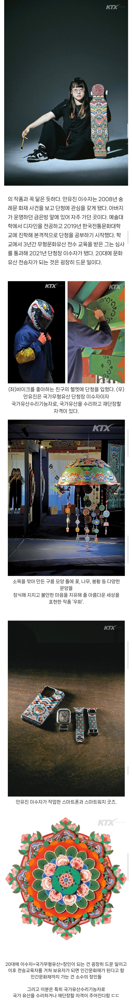

스마트폰 스마트워치 굿즈 사고싶다
좀 치는데
존나 멋있잖아
단청에 초록색이 다른나라엔 없는 유니크함 같음
다른나라도 초록색있는걸로 봤는데 아닌가
난 왜 초록색하면 이슬람쪽이 먼저 생각나냐
실제로 신성시했음. 그러니 국기에 쓰는것도 좋아하고. 관찰력이 좋구나
아니근데 닉이 왜 탈레반이 중복이라 아무 받침 넣은 것 처럼 지으셨어요...
램혁수단 탈램반...
무형문화재 이수자네.. 이수자는 젊은 사람들도 적지 않음
케이스 탐나네
우와 안유진씨와 이수자씨 대단하네
이수자가 사람 이름이 아니라 교육을 이수한 사람이라는 뜻일걸
아...네....
드립 실패다아아아앗!
다음주 휴재애애앳!!
흙흙 난 최소한 안유진씨에서 성은 빼고 불러!라도 나올 줄 알았어ㅠㅠ

ㅋㅋㅋㅋㅋㅋㅋㅋㅋㅋㅋㅋㅋ
안유진 언제 저런것 까지 공부한거냐아앗!!!
이수지 아니었음?
과거와 현대의 조화네. 이쁘다
와 개멋지다
개쩌네 와우
실력 미쳤다 와
너무 예쁜데
이수자씨 젊은나이에 대단하시네요!!
저 분은 안유진 씨고
이수자 씨는 다른 분인가봐
케이스 개이쁘다
공동콜라보 작업 미쳤네
케이스 어디서 사냐 개이쁜데
스케이트보드 ㅈㄴ 까리한데
단청 키보드 팔던데 이분 작품인가
졸라 힙하네
https://marpple.shop/kr/jincheong/products?cate_root_id=1
단청은 건축 부재에 각종 문양을 채색하는 건축 미술을 말한다. 옛날부터 동북아 지역에서 주로 사용하던 목조 건축 자재인 소나무는 단단하고 잘 썩지 않는 대신 표면이 거칠고 건조 후 갈라짐이 심하다는 단점이 있었다. 그래서 이러한 단점을 커버하고자 부대 표면을 칠하기 시작했고, 이후 여기에 권위나 종교, 기복과 종교 등을 상징하는 문양을 넣은 것이 오늘날의 단청이 되었다.
우리나라 단청에 대한 기록은 삼국사기나 삼국유사에서부터 찾을 수 있으며, 중국에도 여씨춘추나 예시, 회남자, 문선 등의 사료나 일본의 일본서기 등에도 기록이 남아 있다. 가장 오래된 기록은 기원전 한나라 시기의 문서에 '단청'이라는 말이 나온다.
단청의 원료인 안료는 주로 무기염류인 광물질을 사용하나 주홍이나 황단 같이 인공으로 만든 것도 있고, 패각으로 가공한 정분이나 소나무로 만든 송연같이 생물 소재도 있다. 또한 무광택이라 역광에서도 제 빛을 내는 것이 특징이다. 과거 안료가 비싸서 단청을 칠하지 못했던 민간에서는 기름을 대신 칠했다고 한다. 19세기 이후 화학 안료가 개발되었다. 화학 안료는 천연 안료에 비해 은폐력과 착색이 양호하고 무엇보다 값이 싸다는 장점이 있다. 하지만 지나치게 화려하고 강렬한 색조라는 비판도 있다. 최근에는 단청지라고 불리는 단청무늬 스티커도 불교용품점에서 구하고 있다.
한국 외에도 동북아시아의 여러 나라들에 단청이 남아 있다. 한국이 주로 녹색을 사용하는데 비해 중국은 파란색을 많이 사용하며, 일본은 백제의 영향을 받아 하얀색과 빨간색의 주칠단청이 특징이다. 그밖에 몽골이나 튀르키예, 러시아나 동유럽 일부 등에도 단청을 찾을 수 있다.
단청케이스는 부담스럽기는 하는데 한 번 해보고 싶긴 하다.
단청 헬멧 개ㅈ간지네 진짜;
폰케이스랑 워치 줄 갖고싶다
오 폴드 케이스로 크게 하고 싶다
프로 재능러네
내 친구도 저거인데.. 20대 후반에 됐던 거 같은데.. 절 같은 데 수선하러 다님
이야.. 멋있다
멋있는 분이시네요
선조들 그림 덧칠 좋아 청년